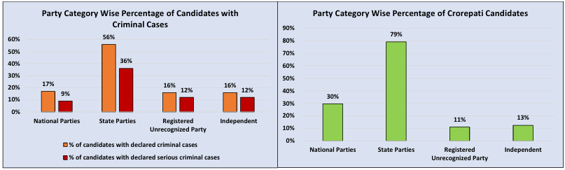
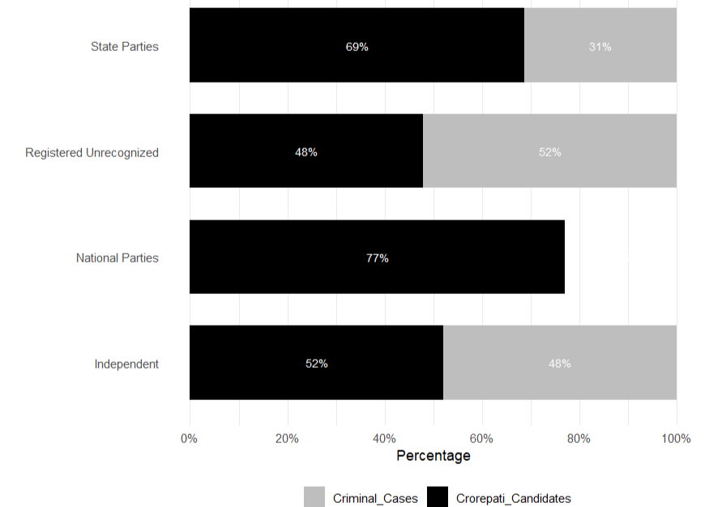
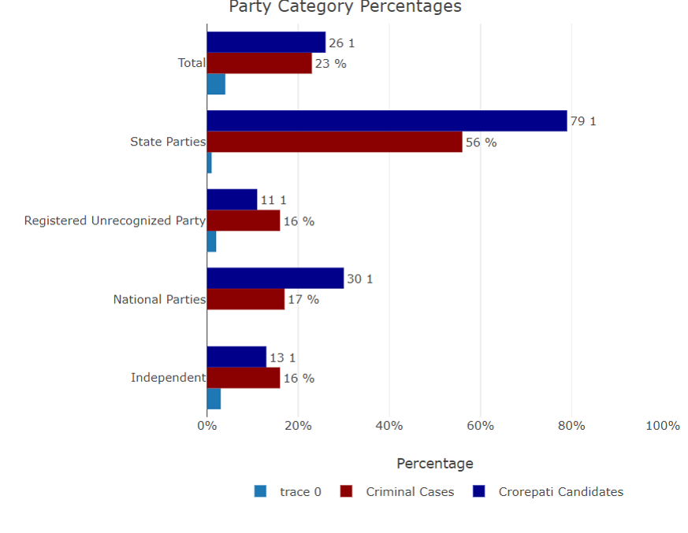
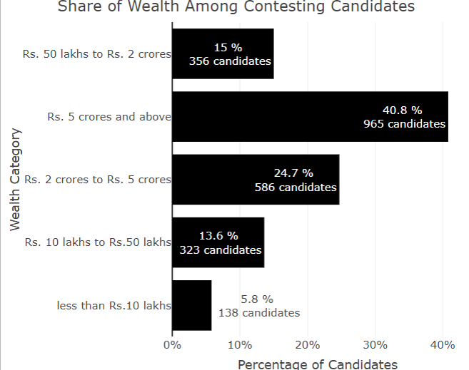
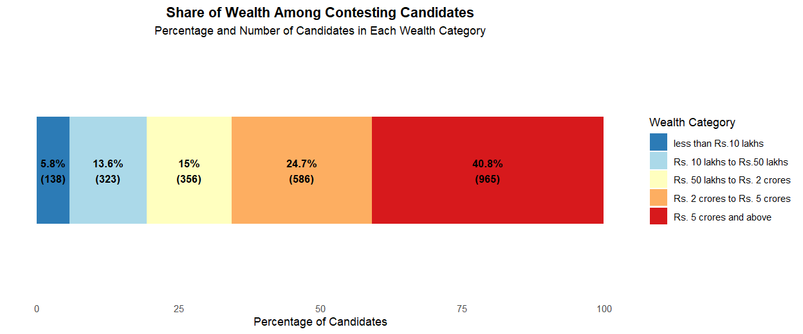

VISUALIZATION REDESIGN PROJECT
Welcome to our STAT 515 Redesign Project! This project aims to analyze and improve the design of data visualizations, applying best practices in graphic design and data presentation. The focus is on improving clarity, enhancing insight, and addressing any shortcomings of the original visualizations.
In this project, we have selected two original visualizations that depict data about political candidates, including their wealth distribution and criminal cases. Through multiple redesigns, I aim to provide a clearer and more informative perspective on the underlying data.
ORIGINAL VISUALIZATIONS
The original visualizations present data about political candidates in terms of:
Criminal Cases Among Candidates: The percentage of candidates from different political party categories who have declared criminal and serious criminal cases.

Financial Background: The wealth distribution among the contesting candidates, categorized into different wealth brackets (e.g., less than Rs. 10 lakhs, Rs. 10 lakhs to Rs. 50 lakhs, and above Rs. 5 crores).

ANALYSIS OF THE ORIGINAL VISUALIZATIONS
-Criminal Cases Visualization:
*The bar charts show that State Parties have the highest proportion of candidates with declared criminal and serious criminal cases (56% and 36%, respectively). National Parties and Independent candidates have lower proportions, but the difference in representation is not immediately clear.
*Flaws: The side-by-side bar charts use similar colors, making it difficult to differentiate between candidates with criminal and serious criminal cases. The charts also lack annotations that could make the differences between categories more obvious.
-Financial Background Visualization:
*The pie chart displays the proportion of candidates in different wealth categories, with most candidates falling below Rs. 10 lakhs (40.8%). A smaller portion of candidates possess wealth above Rs. 5 crores.
*Flaws: The pie chart is not ideal for accurately comparing different categories, especially when the proportions are close. Pie charts are less effective at revealing fine differences in data, making it harder to understand the distribution at a glance.
REDESIGNED VISUALIZATIONS
To address the shortcomings of the original visualizations, I have created several redesigned versions that emphasize clarity and comparative insights.
-Redesign 1 For Criminal Cases Visualization:
 This is a stacked horizontal bar chart comparing the share of candidates with criminal cases (gray) and crorepati candidates (black) across different political party categories. It includes State Parties, Registered Unrecognized Parties, National Parties, and Independent candidates.
-Key Points:
*National Parties have 77% crorepati candidates, showing a strong presence of wealth. State Parties have 69% crorepati candidates and 31% with criminal cases.
*Independent candidates are nearly balanced, with 52% having criminal cases and 48% being crorepati. Registered Unrecognized Parties have 52% with criminal cases versus 48% who are crorepati.
-Improvements:
*Direct Comparison: Stacking the data allows for a side-by-side look at criminal cases vs. wealth within each party.
*Clear Labels: Percentages on each segment make it easy to see the share of each group.
*Simpler Analysis: By combining two metrics in one chart, it’s easier to grasp the overall picture quickly.
This design makes it simple to compare the balance of wealth and criminal backgrounds among candidates from various parties.
-Redesign 2 For Criminal Cases Visualization:

This chart uses a grouped bar chart to display the percentage of candidates with criminal cases (red) and crorepati candidates (blue) across different political parties, including State Parties, National Parties, Registered Unrecognized Parties, and Independents.
-Key Points:
*State Parties have the highest share of crorepati candidates (79%) and a significant portion with criminal cases (56%).
*National Parties follow with 30% crorepati candidates and 17% with criminal cases.
*Independents and Registered Unrecognized Parties have smaller shares, both showing 16% of candidates with criminal cases.
-Improvements:
*Side-by-Side Comparison: Grouped bars make it easy to compare criminal cases and wealth status within each party.
*Color Distinction: Clear color contrast helps differentiate the two data categories. Visual Balance: This layout provides a balanced view of the data, making it easier to assess both aspects at a glance.
*This design provides a quick comparison between the financial background and legal status of candidates in each party, offering a straightforward way to interpret the data.
-Redesign 1 For Financial Background Visualization:

This horizontal bar chart illustrates the wealth distribution among contesting candidates, categorized into various wealth brackets, from less than Rs. 10 lakhs to above Rs. 5 crores.
-Key Points:
*The majority of candidates (40.8%, 965 candidates) have wealth above Rs. 5 crores, indicating a significant portion of wealthy candidates.
*24.7% of candidates fall within the Rs. 2 crores to Rs. 5 crores range.
*The Rs. 50 lakhs to Rs. 2 crores category comprises 15% of candidates.
*The least represented category is less than Rs. 10 lakhs, accounting for 5.8% or 138 candidates.
-Improvements:
*Enhanced Clarity: The horizontal bar layout allows for easier reading and comparison of each wealth category.
*Direct Annotations: Percentages and candidate counts are displayed directly on the bars, eliminating the need to refer back to the axis.
*Better Visual Hierarchy: Larger wealth categories are visually more prominent, making it easier to understand the overall distribution.
This redesign provides a clear and intuitive way to see the distribution of wealth among candidates, highlighting which groups are more prevalent.
-Redesign 1 For Financial Background Visualization:

This visualization uses a stacked bar chart to show the percentage and number of candidates in different wealth categories. Each segment represents a wealth bracket, ranging from less than Rs. 10 lakhs to above Rs. 5 crores.
-Key Points:
*The largest portion of candidates (40.8%, 965 candidates) belongs to the above Rs. 5 crores category.
*24.7% of candidates fall within the Rs. 2 crores to Rs. 5 crores range, with 586 candidates.
*The Rs. 50 lakhs to Rs. 2 crores category includes 15% (356 candidates).
*The smallest group is those with less than Rs. 10 lakhs (5.8%, 138 candidates).
-Improvements:
*Visual Simplicity: The stacked bar chart format allows viewers to easily see the proportion of each wealth category.
*Color Coding: Each category is assigned a distinct color, improving readability and making it easy to differentiate wealth groups.
*Detailed Annotations: Each section is labeled with both the percentage and the exact number of candidates, providing precise information without needing additional references.
This redesign offers a clear, concise way to view the wealth distribution among candidates, making it easier to understand the overall spread of financial backgrounds.
CONCLUSION
The redesigns highlight the power of choosing the right visual representation for data. Through the process, I learned that simplifying visuals and selecting chart types that align with the data structure can significantly enhance the viewer’s understanding. Each redesign has its strengths and offers a unique way to interpret the data, whether through a clear bar chart, a detailed treemap, or enhanced annotations.
Further improvements could involve interactive charts that allow users to explore the data by selecting party categories or wealth brackets. Such interactivity would provide a deeper dive into the data and offer a more engaging experience for viewers.
Feel free to explore the visualizations and analysis provided in each section of this website, and I hope you find the redesigns insightful!